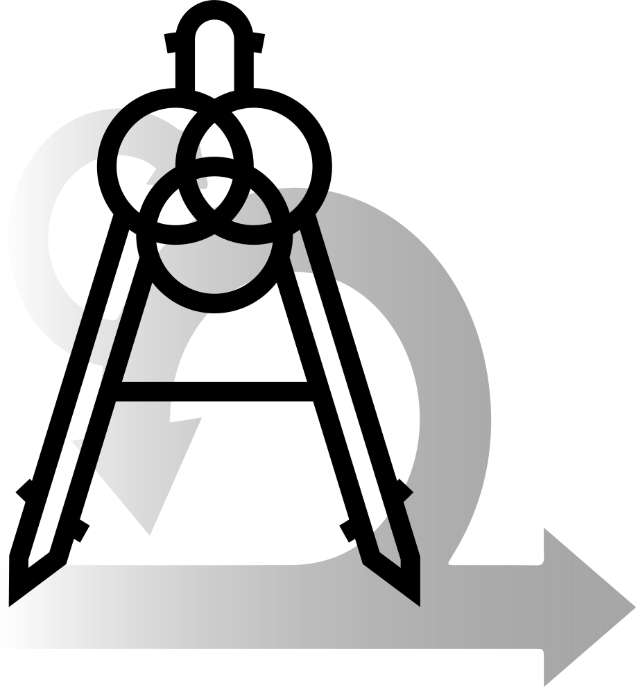

Agile
Architecture
Agile Manifesto Principles
- Build projects around motivated, self-organizing and self-optimizing teams
- Communicate frequently, across domains, preferrably face-to-face
- Create a sustainable development environment
- Maximize the amount of work not done
- Continuously attend to technical excellence and good design
- Continuously deliver value-creating software frequently
- Welcome changing requirements
Agile Core Focus
- People
- Feedback
- Adaptability
- Sustainability
Agile pros
- Delivers value faster
- Cross-functional brings diverse perspectives
- People feel empowered
- Continuous and fast learning
Agile cons
- Does not tackle change processes
- Seemingly simple, but requires experience to get it right
- Only short-term predictability
- Originally only small scale
Architecture - Definition
The fundamental concepts or properties of a system in its environment embodied in its elements, relationships, and in the principles of its design and evolution
(ISO/IEC/IEEE 42010:2011)
The structure of components, their interrelationships, and the principles and guidelines governing their design and evolution over time
(TOGAF Standard 2018)
The important stuff (whatever that is)
(Martin Fowler)
Architecture Focus
- Predictability
- Wholistic Optimization
Architecture pros
- There’s always an architecture, modeling makes it explicit
- Most valuable documentation if done well
- Allows reasoning in broader scopes
- Allows long-term predictions/reasoning/planning
Architecture cons
- In terms of Lean, architecture is actually “waste”
- Unhelpful or even damaging if not updated
- “Ivory tower” architecture often far from reality
- Often found in rigid company structures and misused to control people
Agile
Architecture
Agile
Architecture
Agile Architecture
- Combination of intentional and emergent architecture
- Borrows concepts from many successful approaches (Intentional Architecture, Agile, Lean, Value Engineering)
- Huge emphasis on the organization as a Complex Adaptive System
Agile Architecture Axioms 1
- Customer experience
- Organization structure
Agile Architecture Axioms 2
- Software structure
Agile Architecture Tools
- Inverse Conway Maneuver
- Set-Based Concurrent Engineering
- Minimum Security Architecture
- Architectural Decision Records
Inverse Conway Maneuver
- Do value-stream mapping first
- Segment teams along individual value streams
- Give teams authority, responsibility and accountability
- Allows each part of the system to evolve as autonomously as possible
Set-Based Concurrent Engineering
- Simultaneously explore multiple solutions for every sub-system
- Use rapid, low-cost analysis and tests
- Eliminate weak solutions
- Converge on a solution
Minimum Security Architecture
- Start building and evolve your security architecture with the software
- Integrate with and stay in sync with DevOps
- Roll out changes to all teams and products
- Guide developers toward a secure Minimum Viable Product and set architectural direction
Architectural Decision Records
- Decide if something is a architecturally significant decision
- Document significant decisions in a standardized format
ADR Title
| What | Question |
|---|---|
| Status | What is the status: proposed, accepted, rejected, deprecated, superseded, etc.? |
| Context | What is the issue that is motivating this decision or change? |
| Decision | What is the change that is being proposed and/or being executed? |
| Decision scope | Which segments of the enterprise and its software systems are impacted? |
| Decision type | Is the decision easily reversible or not, and why? |
| Consequences | What becomes easier or more difficult to do because of this change? |
Agile Architecture pros
- Focus on organization structure makes desired effects come about naturally
- Combination of best methods from other frameworks
- Proper authority/accountability cut empowers and motivates people
- Allows shifting between long-term planning and short-term work
Agile Architecture cons
- Time will tell